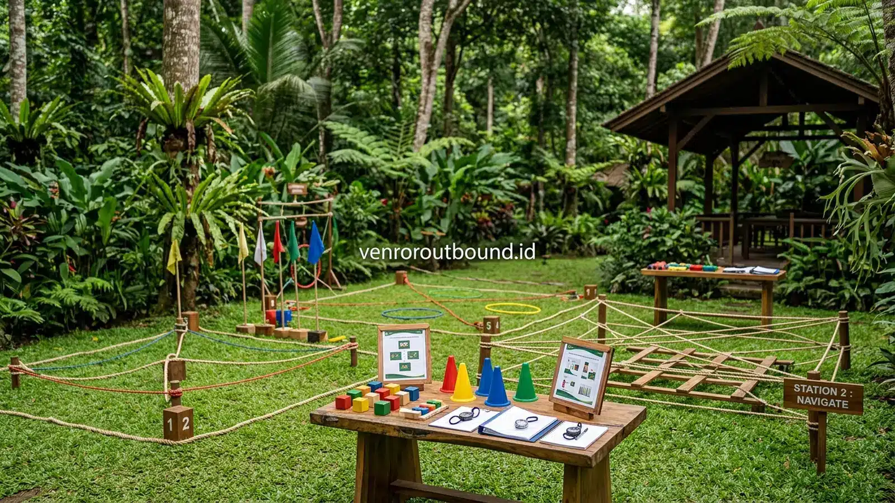
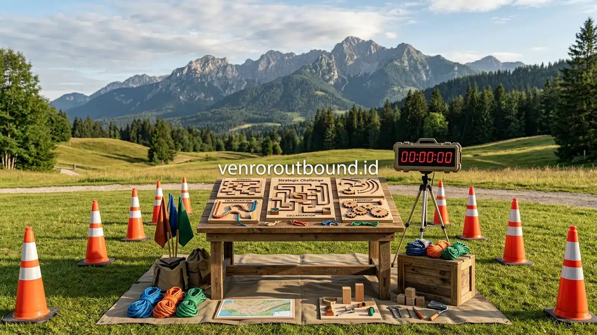
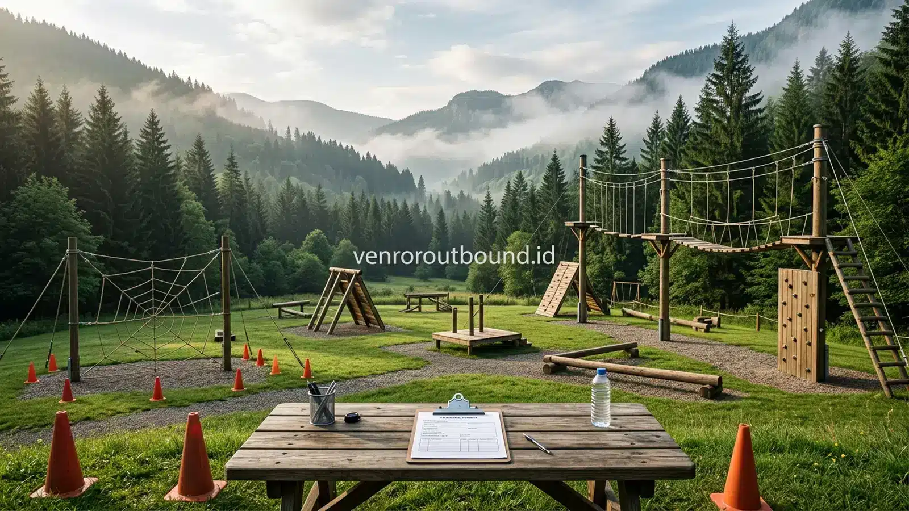

1. Memahami Fenomena Silo Mental dan Hambatan Kolaborasi Antar Divisi
Jawaban Singkat: Mencairkan silo mental antar divisi perusahaan dapat dicapai melalui permainan team building terstruktur yang mewajibkan pertukaran informasi dan koordinasi lintas departemen. Simulasi ini menyadarkan peserta akan pentingnya sinergi bersama demi mencapai tujuan organisasi. Namun, outbound berfungsi sebagai pemantik kesadaran awal, di mana keberlanjutan perubahan budaya kerja tetap membutuhkan komitmen kepemimpinan serta tindak lanjut komunikasi rutin di tempat kerja.
Dalam dinamika organisasi modern yang bergerak cepat, banyak manajemen puncak dan praktisi sumber daya manusia menghadapi tantangan klasik yang tak kasat mata namun berimplikasi besar: silo mentality atau mentalitas sekat departemen. Fenomena ini terjadi ketika masing-masing divisi—mulai dari Divisi Penjualan, Pemasaran, Keuangan, Operasional, hingga Teknologi Informasi—beroperasi layaknya entitas terpisah di dalam satu atap perusahaan yang sama.
Setiap departemen cenderung membatasi pandangan hanya pada pencapaian indikator kinerja utama (KPI) masing-masing, menyimpan informasi secara tertutup (information hoarding), dan memandang divisi lain bukan sebagai mitra kerja sejajar melainkan sebagai penghambat alur birokrasi. Akibatnya, komunikasi horizontal terputus, waktu respons terhadap perubahan pasar melambat, dan muncul asumsi keliru antar tim yang dapat memicu ketegangan relasional.
Menyadari kompleksitas ini, program team building perusahaan yang dirancang secara matang mampu menyediakan media intervensi pengalaman yang menyegarkan. Melalui simulasi terukur di lingkungan luar kantor, para pemimpin tim dan karyawan diajak untuk menyadari bahwa keberhasilan institusi bukanlah hasil kompetisi antar meja divisi, melainkan buah dari orkestrasi kerja sama yang harmonis.

Dampak Komunikasi Tim yang Buruk terhadap Produktivitas Kerja
Pelajari bagaimana sumbatan komunikasi antar departemen menggerus efisiensi operasional harian perusahaan.
2. Mengapa Silo Mindset Bisa Terbentuk dalam Struktur Korporasi?
Terbentuknya mentalitas silo jarang sekali merupakan akibat dari niat buruk individu karyawan. Sering kali, fenomena ini tumbuh subur secara organik karena rancangan operasional dan kebiasaan kerja yang mengakar. Beberapa faktor yang kerap memicu terbentuknya sekat organisasi antara lain:
A. Sistem KPI dan Insentif yang Berdiri Sendiri
Ketika indikator keberhasilan Divisi Penjualan hanya bertumpu pada omzet tanpa memperhitungkan batas kapasitas produksi atau arus kas yang diawasi Divisi Keuangan, benturan prioritas akan mudah terjadi. Masing-masing merasa targetnyalah yang paling berharga bagi kelangsungan bisnis.
Implikasi Lapangan: Divisi cenderung enggan mengorbankan waktu kerja untuk membantu pemecahan masalah departemen tetangga.
B. Arus Komunikasi dan Pertukaran Data yang Asimetris
Ketiadaan kanal komunikasi lintas departemen yang terbuka melahirkan kesenjangan pemahaman konteks. Ketika Divisi Operasional mengalami kendala teknis, Divisi Pelayanan Pelanggan kerap tidak terinformasi secara akurat sehingga kesulitan memberikan penjelasan kepada klien eksternal.
Implikasi Lapangan: Timbul kebiasaan saling menyalahkan (blame game) saat terjadi komplain pelanggan atau keterlambatan proyek.
C. Keterbatasan Ruang Interaksi Non-Formal
Rutinitas kerja harian yang padat di meja masing-masing sering menutup pintu obrolan santai antar karyawan lintas bidang. Tanpa adanya jalinan relasi sosial non-formal, keengganan untuk meminta bantuan secara terbuka akan semakin mengkristal.
Implikasi Lapangan: Terbentuk batasan psikologis (psychological barrier) yang membuat koordinasi lintas lantai kantor terasa kaku dan segan.
Kondisi-kondisi di atas mempertegas bahwa penyelesaian masalah silo memerlukan pendekatan terintegrasi. Hal ini tidak cukup diselesaikan semata-mata dengan edaran surat memo internal ataupun instruksi sepihak dari dewan direksi.
3. Mengapa Experiential Games Lebih Efektif Dibandingkan Teori Kelas?
Sering kali organisasi telah berulang kali menggelar sesi seminar motivasi di ruang rapat tertutup untuk mengingatkan pentingnya kolaborasi. Akan tetapi, mengapa perubahan sikap kerja kerap memudar hanya dalam hitungan hari setelah acara selesai? Perbedaan mendasarnya terletak pada metode pembelajaran yang diterapkan.
Model pembelajaran konvensional umumnya mengandalkan transmisi informasi satu arah (mendengar materi dari slide presentasi). Peserta mungkin memahami konsep sinergi secara logika intelektual, namun tidak mengalami tekanan emosional, kebingungan koordinasi, atau kepuasan saat berhasil memecahkan teka-teki bersama rekan kerja yang sebelumnya jarang berinteraksi.
Sebaliknya, pendekatan experiential games dalam outbound korporat mengadopsi siklus pembelajaran berbasis pengalaman (experiential learning cycle):
- Do (Aktivitas Nyata): Peserta ditempatkan pada simulasi permainan yang memiliki aturan main menantang, batas waktu ketat, dan sumber daya terbatas.
- Feel & Observe (Mengalami Dinamika): Peserta merasakan langsung friksi ketika instruksi tidak jelas, kepanikan ketika target hampir habis, serta kelegaan saat pesan berhasil tersampaikan.
- Reflect (Refleksi): Bersama fasilitator, peserta meninjau kembali apa yang sebenarnya terjadi di balik perilaku mereka selama permainan.
- Apply (Penerapan): Menarik benang merah dari pengalaman simulasi untuk diterapkan pada penyelesaian hambatan operasional nyata di kantor.

4. Desain Simulasi Paralel: Menciptakan Ketergantungan Data Antar Tim
Salah satu modul paling berbobot dalam program outbound untuk mengikis silo adalah simulasi paralel. Dalam format ini, peserta tidak sekadar diadu dalam kompetisi tarik tambang atau estafet kecepatan biasa, melainkan dibagi ke dalam beberapa divisi kerja mini yang saling berjauhan secara geografis di lapangan.
Setiap kelompok diberikan petunjuk tugas yang tampak lengkap, namun sebenarnya memuat potongan puzzle atau kode sandi yang hanya dimiliki oleh kelompok lain. Skenario ini secara cerdas meniru kondisi nyata korporasi:
- Fase Awal (Fokus Sektoral): Pada menit-menit pertama, kelompok biasanya langsung tenggelam menyusun strategi internal mereka sendiri tanpa memedulikan keberadaan kelompok tetangga. Masing-masing berlomba menjadi yang tercepat menyelesaikan tugas mejanya.
- Fase Kebuntuan (The Impasse): Setelah beberapa menit berusaha keras, seluruh tim akhirnya menyadari bahwa mereka membentur dinding buntu. Sumber daya kunci atau petunjuk akhir ternyata berada di tangan meja divisi lain.
- Fase Transformasi (Perundingan Bersama): Terjadi pergeseran paradigma. Utusan perwakilan mulai dikirimkan untuk menjalin komunikasi, mencocokkan data, dan menyepakati skema kerja sama demi kemenangan kolektif seluruh korporasi.
Pengalaman mengalami kebuntuan dan menemukan bahwa penyelamat solusi adalah tim lain menjadi pemicu kesadaran empiris yang amat membekas. Peserta secara mandiri menyimpulkan bahwa mempertahankan rahasia data divisi hanya akan memperlambat pencapaian visi utama perusahaan.
Cairkan Sekat Antar Divisi di Perusahaan Anda
Rancang simulasi team building experiential yang disesuaikan khusus dengan karakteristik dan dinamika organisasi Anda bersama tim konsultan Vendor Outbound.
Konsultasikan Agenda Team Building via WA5. Struktur Debrief Fasilitator: Menghubungkan Lapangan dengan Kantor
Permainan tanpa sesi dekonstruksi atau debrief yang berbobot hanyalah sekadar hiburan rekreasi tanpa makna pembelajaran mendalam. Fasilitator outbound berpengalaman memandu jalannya diskusi refleksi dengan metode terstruktur agar emosi dan wawasan peserta terpetakan secara jernih:
Framework debrief yang digunakan bertumpu pada formula 4A:
- Activity (Apa yang terjadi?): Membuka ruang bagi peserta untuk menceritakan fakta peristiwa yang terjadi selama permainan tanpa menyudutkan salah satu pihak.
- Awareness (Apa yang kita rasakan?): Menggali perasaan ketika informasi ditahan, kebingungan saat tidak ada pemimpin koordinasi, dan kepuasan saat dialog terbuka mulai terjalin.
- Analysis (Mengapa hal itu terjadi?): Mengidentifikasi pola perilaku yang muncul, apakah mencerminkan kebiasaan komunikasi sehari-hari di kantor ataukah dipicu oleh instruksi yang rancu.
- Application (Bagaimana kita menerapkannya di meja kerja?): Merumuskan kesepakatan konkret mengenai apa yang harus mulai dilakukan (start doing), dihentikan (stop doing), dan dilanjutkan (continue doing) saat kembali ke rutinitas kerja Senin depan.
6. Komparasi: Karakteristik Budaya Silo vs Budaya Sinergi Kolaboratif
Untuk mempermudah manajemen HR dan operasional dalam mengevaluasi iklim kerja saat ini, berikut matriks perbandingan antara organisasi yang terperangkap dalam sekat departemen dengan organisasi yang telah membangun budaya sinergi lintas fungsi:
| Indikator Operasional | Kondisi Mentalitas Silo | Kondisi Sinergi Kolaboratif |
|---|---|---|
| Aliran Informasi | Tertutup, lambat, data disimpan hanya untuk internal divisi sendiri. | Transparan, cepat mengalir, dan mudah diakses oleh pihak berkepentingan. |
| Orientasi Target (KPI) | Ego sektoral; mementingkan angka departemen meski merugikan fungsi lain. | Keselarasan visi makro; target divisi mendukung keberhasilan institusi. |
| Respons Terhadap Masalah | Saling lempar tanggung jawab (defensive blame game). | Pemecahan masalah bersama berbasis fakta dan analisis akar kendala. |
| Dinamika Pertemuan Lintas Divisi | Kaku, formal, minim inisiatif, dan diwarnai praduga negatif. | Interaktif, solutif, terbuka terhadap masukan, dan penuh rasa saling percaya. |
| Pemanfaatan Sumber Daya | Duplikasi alat kerja dan anggaran karena enggan berbagi aset. | Optimalisasi sumber daya bersama secara efektif dan hemat biaya operasional. |

Mengukur Efektivitas Outbound Dalam Meningkatkan Retensi & Engagement Karyawan
Panduan lengkap menyusun parameter Before-During-After dan indikator kualitatif evaluasi outbound.
7. Menghubungkan Refleksi Simulasi dengan Dinamika Lapangan Kerja
Agar nilai-nilai kebersamaan yang terbangun di area outbound Batu Malang atau lokasi pilihan lainnya tidak menguap begitu bus rombongan tiba di kantor, tim HR perlu menyediakan wadah artikulasi refleksi. Beberapa pertanyaan pemandu yang terbukti ampuh menjembatani pengalaman simulasi dengan realitas harian meliputi:
- Pertanyaan Informasi: "Apakah saluran komunikasi yang kita miliki saat ini sudah cukup memudahkan divisi lain untuk memahami kendala operasional kita?"
- Pertanyaan Ekspektasi: "Apakah kita pernah secara terbuka menanyakan kepada departemen mitra apa yang sebenarnya mereka butuhkan dari laporan kerja mingguan kita?"
- Pertanyaan Keselarasan: "Ketika kita mengejar target bulanan divisi, apakah ada dampak sampingan yang tanpa sengaja membebani alur kerja tim sebelah?"
- Pertanyaan Ketergantungan: "Apa konsekuensi terburuk bagi kepuasan pelanggan jika salah satu departemen memutuskan untuk berjalan sendiri tanpa koordinasi paralel?"
Pertanyaan-pertanyaan ini menantang para supervisor dan manajer operasional untuk melihat gambaran besar institusi (helicopter view), menyadari bahwa perusahaan adalah satu mata rantai yang kekuatannya ditentukan oleh mata rantai yang paling lemah.
8. Rencana Aksi Lanjutan Pasca-Outbound: Menjaga Komitmen Tetap Hidup
Perlu ditekankan kembali secara objektif bahwa kegiatan outbound satu hari ataupun dua hari adalah sarana pemicu kesadaran, bukan tongkat sihir yang seketika menghapus kebiasaan bertahun-tahun. Untuk memastikan efek positif tersebut berakar menjadi budaya kerja baru, langkah tindak lanjut (post-event governance) menjadi penentu utama:
- Weekly Cross-Department Check-in: Buat forum koordinasi kilat berdurasi 15–20 menit setiap awal pekan antar perwakilan divisi untuk menyelaraskan prioritas proyek, bukan untuk saling mengaudit melainkan saling mengonfirmasi kebutuhan dukungan.
- Pajang Piagam Komitmen Kolaborasi: Lembar komitmen bersama yang ditandatangani seluruh kepala divisi saat penutupan outbound hendaknya dibingkai dan dipasang di area komunal kantor sebagai pengingat visual harian.
- Pemberian Penghargaan Sinergi: Manajemen dapat memperkenalkan pengakuan berkala bagi proyek kerja sama antar departemen yang berhasil diselesaikan dengan tingkat kolaborasi dan koordinasi paling mulus.
- Evaluasi Tindak Lanjut oleh HR: Pada minggu ke-4 dan triwulan pertama pasca-kegiatan, HR menyebarkan instrumen evaluasi singkat untuk memantau apakah ada perbaikan nyata dalam kelancaran arus informasi antar divisi.

Paket Outbound Corporate Synergy & Employee Engagement Perusahaan 2026
Simak spesifikasi modul komprehensif 1-Day dan 2-Day untuk membangun sinergi lintas fungsi instansi Anda.
Kesimpulan: Merajut Sinergi Menuju Keunggulan Organisasi
Meruntuhkan silo mental antar divisi adalah perjalanan berkelanjutan dalam membangun rasa saling percaya dan keterbukaan komunikasi. Program team building perusahaan melalui simulasi experiential games memberikan pengalaman langsung yang merangsang kesadaran kolektif bahwa kerja sama lintas sektoral adalah prasyarat utama keberhasilan bisnis. Ketika didukung oleh komitmen kepemimpinan yang konsisten dan tindak lanjut terarah di lingkungan kerja, sinergi yang terjalin akan bertransformasi menjadi modal sosial berharga yang menggerakkan perusahaan menuju pertumbuhan jangka panjang.
Pertanyaan Seputar Penanganan Silo Mental & Team Building

Arby Ardiansyah
Arby Ardiansyah merupakan penulis konten Vendor Outbound yang berfokus pada topik outbound perusahaan, team building, leadership, employee engagement, dan experiential learning.